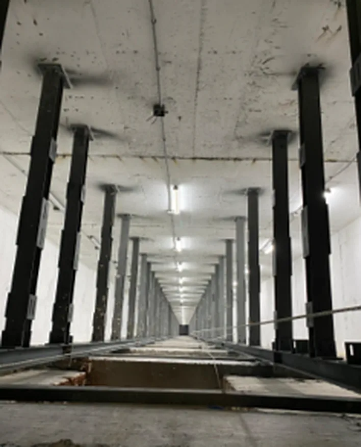

Hizmetler · 04
İmalat
ve montaj.
Atölye üretimini, kaynaklı imalatı ve saha montajını kendimiz yapıyor, işleri anahtar teslim veriyoruz.

Atölyeden sahaya
Kendi
atölyemizde.
Kesim, kaynak ve boya kendi atölyemizde, kontrollü koşullarda yapılır. Montajı da aynı ekip üstlenir.
- 01
Atölye üretimi
Kesim, büküm ve delik işleri kendi atölyemizde, ölçülü çizimlere göre yapılır.
- 02
Kaynaklı imalat
Birleşimler kaynak ve cıvatayla projede çizildiği gibi kurulur; kaynaklar taşlanıp temizlenir.
- 03
Saha montajı
Parçalar sahaya montaja hazır gelir; kurulumu kendi ekibimiz hızlı ve temiz bir şekilde yapar.
- 04
Anahtar teslim
Boya, kaplama ve korkuluk dahil işi tamamlıyor, son kontrollerden sonra teslim ediyoruz.


